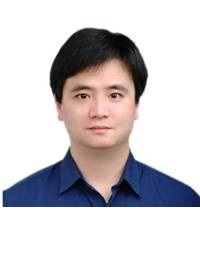

Hsi-Chao Chen, Senior Consultant

Dr. Chen is an expert in optical technology, with over 20 years experience. He specializes in solid state lighting, optical system designs for displays, carbon nanotubes and optical film coating technology. Dr. Chen assists our green energy project companies in their research and product development.
Dr. Chen serves on Taiwan's Ministry of Economic Affairs Small Business Innovation Research program's management committee.. This organization assists the government to evaluate green energy projects undertaken by local small businesses. Earlier in his career Dr. Chen was an optical engineer at Delta Electronic Inc., one of Taiwan's most successful hardware manufacturers. Dr. Chen led the projector display research and development team.
Dr. Chen is currently an associate professor in the Department of Engineering at National Yunlin University of Science and Technology. He also heads the school's Applied Optics Lab. As a scholar, Dr. Chen has published papers in worldwide well known journals such as Optics Express, Electrochimica Acta, and Proc. of SPIE. He owns several patents in optical engineering technology.
Dr. Chen earned a bachelor of science in mechanical engineer at National Cheng-Kung University, a master of science in mechanical engineering at National Taiwan University; and a Ph.D. degree in optical engineering from National Central University's Institute of Optical Sciences.
Dr. Chen’s papers and patents are available at: http://bit.ly/1t3BZXc